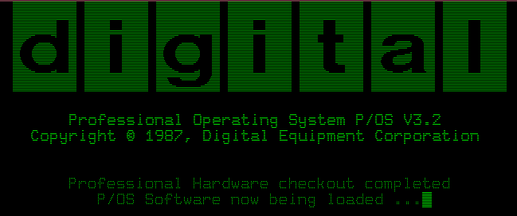
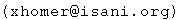

The Xhomer Project

Xhomer is a machine emulator for the Digital Equipment Corporation (DEC) Pro 350 computer, a
PDP-11-based machine that was sold in the early to mid-'80's. Xhomer is based on the PDP-11
CPU core from the SIMH simulator, and is written entirely in C.
Supported Platforms
Xhomer is an X-windows application that was developed and tested on an x86 Linux system
(Ubuntu 20.04, most recently). It will likely build and run on other Unix-like systems as well,
possibly requiring minor tweaks to the Makefile. In addition to the source, a completely
statically-linked x86 Linux binary is provided.
Quick Start
If you have access to an x86 Linux system, and would like to see a quick demo of Xhomer,
only two files are required. Download this statically-linked Xhomer binary and the
P/OS 3.2 hard disk image file. Untar the binary (the tarball contains a single executable
only) and gunzip the disk image in the same directory (the latter expands to about 67 MB):
gunzip -dc xhomer.static.tgz | tar xvf -
gunzip pos32.rd.gz
Next, simply run "xhomer.static." Note that this static binary is an older version of Xhomer (9-16-06) To exit Xhomer,
make sure the emulator window has focus, then press ctrl-F1, and select the "Shutdown emulator" option.
Download
Xhomer source (version 2-19-24)
(filesize: TBD md5sum: TBD)
(all of the documentation from this web site is included in DOC/index.html)
Xhomer statically-linked x86 Linux binary (same file as in "Quick Start")
(filesize: 665290 md5sum: 5faa59552c9de4eba50c55497b743afe)
P/OS 3.2 hard disk image (same file as in "Quick Start")
(filesize: 3789644 md5sum: a611327714417d9b629cd20e540ce974 - uncompresses to 67 MB)
(press return to log in to P/OS)
Venix 2.0 hard disk image
(filesize: 1749690 md5sum: 22d5c154c11cc762f03d609ddbce4d0b - uncompresses to 33 MB)
(log in as user "root" for a shell, or as user "demo" to see the graphics demo -
neither account has a password)
RT-11 V5.3 hard disk image
(filesize: 1022425 md5sum: ce604ff437514808f820f93d33639167 - uncompresses to 33 MB)
(use "gunzip -dc rt11v53.rd.tgz | tar xvf -" to extract the disk image - please
read the license files included in this particular archive)
2.9 BSD hard disk image
(filesize: 4077129 md5sum: 7414500643160d59ea27231d8c83da2a - uncompresses to 134217728 bytes)
(log in as user "root" with password "xhomer")
P/OS 3.2 installation floppy disk images
(filesize: 2955387 md5sum: 25afdae87f37469e9f5cac088fda81dd)
(these are only needed to build a new P/OS hard disk image from scratch)
(Caution: Some web browsers might remove the ".gz" extension from the disk image filenames, without
actually decompressing them. If this happens, add the ".gz" extension back manually before running
gunzip.)
Feedback
Feedback, questions, bug reports, patches, etc. are always welcome. Also, I would be very
interested in hearing whether anyone is able to run other operating systems.
Please contact me at the address below.
Last updated 2-19-24 by Tarik Isani 